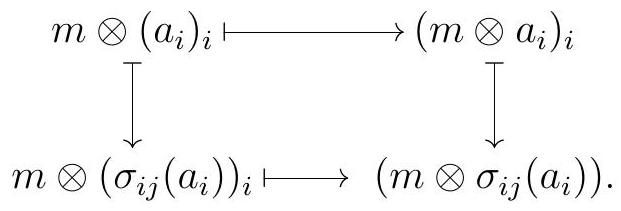

Section 3.2 Tensor Products
Subsection Biadditive Maps and First Properties
“Tenser, said the Tensor. Tension, apprehension, and dissension have begun.”―Alfred Bester
Definition 3.29.
Definition 3.18. Fix a ring \(R\text{,}\) and consider:
- a right \(R\)-module \(M\text{,}\)
- a left \(R\)-module \(N\text{,}\)
- an abelian group \(L\text{.}\)
A function \(f: M \times N \longrightarrow L\) is \(R\)-biadditive if for all \(m, m^{\prime} \in M\text{,}\) all \(n, n^{\prime} \in N\text{,}\) and all \(r \in R\) we have
- \(\displaystyle f\left(m+m^{\prime}, n\right)=f(m, n)+f\left(m^{\prime}, n\right)\)
- \(\displaystyle f\left(m, n+n^{\prime}\right)=f(m, n)+f\left(m, n^{\prime}\right)\)
- \(f(m r, n)=f(m, r n)\text{.}\)
When \(R\) is a commutative ring, suppose that \(L\) is also an \(R\)-module. We say that a function \(f: M \times N \longrightarrow L\) is \(R\)-bilinear if for all \(m, m^{\prime} \in M\text{,}\) all \(n, n^{\prime} \in N\text{,}\) and all \(r \in R\) we have
- \(\displaystyle f\left(m+m^{\prime}, n\right)=f(m, n)+f\left(m^{\prime}, n\right)\)
- \(\displaystyle f\left(m, n+n^{\prime}\right)=f(m, n)+f\left(m, n^{\prime}\right)\)
- \(f(r m, n)=f(m, r n)=r f(m, n)\text{.}\)
Note that an \(R\)-bilinear function is an \(R\)-biadditive function that satisfies
\begin{equation*}
f(r m, n)=f(m, r n)=r f(m, n)
\end{equation*}
Example 3.30.
Example 3.19. The product on \(R\) is an \(R\)-biadditive function \(R \times R \longrightarrow R\text{.}\) The first two rules follow from distributivity of multiplication over the sum; the final rule is a consequence of the associativity of multiplication.
When \(R\) is commutative, this is an \(R\)-bilinear function.
Definition 3.31.
Definition 3.20. Let \(M\) be a right \(R\)-module and let \(N\) be a left \(R\)-module. The tensor product of \(M\) and \(N\) is an abelian group \(M \otimes_{R} N\) together with an \(R\)-biadditive function \(\tau: M \times N \longrightarrow M \otimes_{R} N\) with the following universal property: for every abelian group \(A\) and every \(R\)-biadditive map \(f: M \times N \longrightarrow A\text{,}\) there exists a unique group homomorphism \(\tilde{f}: M \otimes_{R} N \longrightarrow A\) such that the following diagram commutes:
We will now show that tensor products exist and are unique up to isomorphism; in particular, we can talk about the tensor product of \(M\) and \(N\text{.}\)
Lemma 3.32.
Lemma 3.21. Let \(R\) be any ring, \(M\) be a right \(R\)-module, and \(N\) a left \(R\)-module. The tensor product of \(M\) and \(N\) is unique up to unique isomorphism. More precisely, if \(M \times N \stackrel{\tau_{1}}{\rightarrow} T_{1}\) and \(M \times N \stackrel{\tau_{2}}{\rightarrow} T_{2}\) are two tensor products, then there exists a unique isomorphism \(T_{1} \stackrel{i}{\rightarrow} T_{2}\) such that
Proof.
Proof. First, note that the universal property of the tensor product implies that there exists a unique \(\varphi\) such that
commutes. Since the identity map \(T_{i} \longrightarrow T_{i}\) is such a map, it must be the only such map.
Similarly, there are unique maps \(\varphi_{1}: T_{1} \longrightarrow T_{2}\) and \(\varphi_{2}: T_{2} \longrightarrow T_{1}\) such that
both commute. Stacking these up, we get commutative diagrams
Note that the identity maps on \(T_{1}\) and \(T_{2}\) are homomorphisms \(T_{1} \rightarrow T_{1}\) and \(T_{2} \rightarrow T_{2}\) that would make each of these triangles commute:
By uniqueness, \(\varphi_{2} \varphi_{1}\) must be the identity on \(T_{1}\) and \(\varphi_{1} \varphi_{2}\) must be the identity on \(T_{2}\text{.}\) In particular, \(T_{1}\) and \(T_{2}\) are isomorphic, and the isomorphisms \(\varphi_{1}\) and \(\varphi_{2}\) are unique.
Theorem 3.33.
Theorem 3.22. Given any right \(R\)-modules \(M\) and any left \(R\)-module \(N\text{,}\) their tensor product \(M \otimes_{R} N\) exists, and it is given by the abelian group \(M \otimes_{R} N\) defined as follows:
- Generators: For each pair of elements \(m \in M\) and \(n \in N\text{,}\) we have a generator \(m \otimes n\text{.}\)
- Relations: the generators of \(m \otimes n\) satisfy the following relations, where \(m, m^{\prime} \in M\text{,}\) \(n, n^{\prime} \in N\text{,}\) and \(r \in R\) :
\begin{equation*}
\begin{aligned}
m \otimes\left(n+n^{\prime}\right) & =m \otimes n+m \otimes n^{\prime} \\
\left(m+m^{\prime}\right) \otimes n & =m \otimes n+m \otimes n^{\prime} \\
(m r) \otimes n & =m \otimes(r n) .
\end{aligned}
\end{equation*}
Proof.
Proof. Let \(F\) be the free abelian group on the set \(M \times N\text{.}\) In what follows, we identify a pair \((m, n) \in M \times N\) with the corresponding basis element for \(F\text{.}\) Let \(S\) be the subgroup of \(F\) generated by
\begin{equation*}
\left.S=\left(\begin{array}{c|c}
\left(m, n+n^{\prime}\right)-(m, n)-\left(m, n^{\prime}\right) & m, m^{\prime} \in M \\
\left(m+m^{\prime}, n\right)-(m, n)-\left(m^{\prime}, n\right) & n, n^{\prime} \in N \\
(m r, n)-(m, r n) & r \in R
\end{array}\right\}\right)
\end{equation*}
Let \(M \otimes_{R} N:=F / S\text{,}\) and let \(m \otimes n\) denote the class of \((m, n)\) in the quotient. We claim that this abelian group \(M \otimes_{R} N\) is a tensor product for \(M\) and \(N\text{,}\) together with the map
\begin{equation*}
\begin{gathered}
M \times N \stackrel{\tau}{\longrightarrow} M \otimes N \\
(m, n) \longmapsto M \otimes n
\end{gathered}
\end{equation*}
Notice \(\tau\) is the restriction of the quotient map \(F \longrightarrow F / S\) to the basis elements of \(F\text{.}\) Moreover, by construction of \(M \otimes_{R} N\text{,}\) the following identities hold:
\begin{equation*}
\begin{array}{r}
m \otimes\left(n+n^{\prime}\right)=m \otimes n+m \otimes n^{\prime} \\
\left(m+m^{\prime}\right) \otimes n=m \otimes n+m \otimes n^{\prime} \\
(m r) \otimes n=m \otimes(r n)
\end{array}
\end{equation*}
Together, these make \(\tau\) an \(R\)-biadditive map. The map \(M \times N \longrightarrow F\) that sends each pair \((m, n)\) to the corresponding basis element is \(R\)-bilinear by construction. Moreover, there is a natural quotient map \(F \longrightarrow M \otimes_{R} N\text{,}\) and these maps make the diagram
commute.
Now suppose that \(A\) is any other abelian group, and let \(M \times N \stackrel{f}{\rightarrow} A\) by any \(R\)-biadditive map. Since \(F\) is the free \(R\)-module on \(M \times N, f\) induces a homomorphism of abelian groups \(\varphi: F \longrightarrow A\) such that \(f i=\varphi\text{,}\) meaning \(f(m, n)=\varphi(m, n)\) for all \(m \in M\) and all \(n \in N\text{.}\)
Finally, the fact that \(f\) is bilinear implies that \(S \subseteq \operatorname{ker} \varphi\text{.}\) Therefore, \(\varphi\) induces a group homomorphism on \(F / S=M \otimes_{R} N\text{.}\) All this fits in the following commutative diagram:
Finally, this map \(\tilde{f}\) we constructed satisfies \(\tilde{f}(n \otimes n)=f(m, n)\text{,}\) and since \(M \otimes_{R} N\) is generated by such elements, \(\tilde{f}\) is completely determined by the images of \(m \otimes n\text{,}\) and thus unique.
The construction in Theorem 3.22 gives us generators \(m \otimes n\) for \(M \otimes_{R} N\text{.}\) These are usually called simple tensors. So any element in \(M \otimes_{R} N\) is of the form
\begin{equation*}
\sum_{i=1}^{k} m_{i} \otimes n_{i}
\end{equation*}
Such expressions are not unique. For a cheap example, consider the relations we used to construct \(M \otimes_{R} N\) from the abelian group on \(M \times N\text{,}\) which gives us nontrivial ways to write the 0 element in \(M \otimes_{R} N\) :
\begin{equation*}
\begin{array}{r}
0=m \otimes\left(n+n^{\prime}\right)-m \otimes n-m \otimes n^{\prime} \\
0=\left(m+m^{\prime}\right) \otimes n-m \otimes n-m \otimes n^{\prime} \\
0=(m r) \otimes n-m \otimes(r n) .
\end{array}
\end{equation*}
This makes things unexpectedly tricky. For starters, the tensor product of two nonzero modules might be zero nevertheless. Also, whenever we try to define some \(R\)-module homomorphism from \(M \otimes_{R} N\) into some other \(R\)-module, we must carefully check that our map is well-defined, which is in principle not an easy task. Therefore, the easiest way to define some \(R\)-module homomorphism from \(M \otimes_{R} N\) is to give some \(R\)-bilinear map from \(M \times N\) into our desired \(R\)-module.
In summary: the tensor product \(M \otimes_{R} N\) of \(M\) and \(N\) is generated by the simple tensors \(m \otimes n\text{,}\) but it’s important to remember (though we’re all bound to forget once or twice) that not all elements in \(M \otimes_{R} N\) are simple tensors. Moreover, even if \(M\) and \(N\) are nonzero, \(M \otimes_{R} N\) could very well be zero.
Remark 3.34.
Remark 3.23. Two group homomorphisms \(M \otimes_{R} N \longrightarrow L\) coincide if and only if they agree on simple tensors, since these are generators for \(M \otimes_{R} N\text{.}\)
Remark 3.35.
Remark 3.24. In any tensor product \(M \otimes_{R} N\text{,}\) the simple tensor \(0 \otimes 0\) is the zero element, and
\begin{equation*}
m \otimes 0=0=0 \otimes n
\end{equation*}
for all \(m \in M\) and \(n \in N\text{.}\)
Subsection Elements in Tensor Products
“In the beginning God said, the four-dimensional divergence of an antisymmetric, second rank tensor equals zero, and there was light, and it was good. And on the seventh day he rested.”―Michio Kaku
Let’s see some examples of how tensor products can be zero.
Example 3.36.
Example 3.25. We claim that \(\mathbb{Z} / 2 \otimes_{\mathbb{Z}} \mathbb{Q}=0\text{,}\) despite the fact that both of these \(\mathbb{Z}\)-modules are nonzero. To see that, simply note that given any \(a \in \mathbb{Z} / 2\) and any \(p \in \mathbb{Q}\text{,}\)
\begin{equation*}
a \otimes p=a \otimes \frac{2 p}{2}=(2 a) \otimes \frac{p}{2}=0 \otimes \frac{p}{2}=0
\end{equation*}
Since \(\mathbb{Z} / 2 \otimes_{\mathbb{Z}} \mathbb{Q}\) is generated by simple tensors, which are all 0 , we conclude that \(\mathbb{Z} / 2 \otimes_{\mathbb{Z}} \mathbb{Q}=0\text{.}\)
Example 3.37.
Example 3.26. Consider the abelian group \(\mathbb{Q} / \mathbb{Z}\text{.}\) Again, this is very much nonzero, and yet we claim that \(\mathbb{Q} / \mathbb{Z} \otimes_{\mathbb{Z}} \mathbb{Q} / \mathbb{Z}=0\text{.}\) For any simple tensor,
\begin{equation*}
\begin{aligned}
\left(\frac{p}{q}+\mathbb{Z}\right) \otimes\left(\frac{a}{b}+\mathbb{Z}\right)=\left(\frac{b p}{b q}+\mathbb{Z}\right) \otimes\left(\frac{a}{b}+\mathbb{Z}\right) & =\left(\frac{p}{b q}+\mathbb{Z}\right) \otimes b\left(\frac{a}{b}+\mathbb{Z}\right) \\
& =\left(\frac{p}{b q}+\mathbb{Z}\right) \otimes 0=0 \otimes 0=0
\end{aligned}
\end{equation*}
Example 3.38.
Example 3.27. Let \(p\) and \(q\) be distinct prime integers. Then \(p\) has inverse modulo \(q\text{,}\) say \(a p \equiv 1 \bmod q\text{,}\) and \(q\) has an inverse modulo \(p\text{,}\) say \(b q \equiv 1 \bmod p\text{.}\) Given any simple tensor \(n \otimes m\) in \(\mathbb{Z} / p \otimes_{\mathbb{Z}} \mathbb{Z} / q\)
\begin{equation*}
n \otimes m=((b q) n) \otimes((a p) m)=(p b n) \otimes(q a m)=0 \otimes 0
\end{equation*}
Since all simple tensors are 0 and \(\mathbb{Z} / p \otimes_{\mathbb{Z}} \mathbb{Z} / q\) is generated by simple tensors, we conclude that \(\mathbb{Z} / p \otimes_{\mathbb{Z}} \mathbb{Z} / q=0\text{.}\)
More generally, the following holds:
Exercise 3.39.
Show that if \(d=\operatorname{gcd}(m, n)\text{,}\) then \(\mathbb{Z} / n \otimes_{\mathbb{Z}} \mathbb{Z} / m \cong \mathbb{Z} / d\text{.}\)
Of course not all tensor products are zero. A good method for showing that a particular element \(m\) in a module \(M\) is nonzero is to give a homomorphism from \(M\) sending \(m\) to some nonzero element. We apply this technique to tensor products: to show that a particular element \(x\) in \(M \otimes_{R} N\) is nonzero, we construct a homomorphism from \(M \otimes_{R} N\) that takes \(x\) no some nonzero element. This is typically easier for simple tensors: we need an \(R\)-biadditive map out of \(M \times N\) that sends the corresponding pair to a nonzero element.
Example 3.40.
Example 3.28. Consider the abelian group \(2 \mathbb{Z} \otimes_{\mathbb{Z}} \mathbb{Z} / 2\text{.}\) The map
\begin{equation*}
\begin{array}{r}
2 \mathbb{Z} \times \mathbb{Z} / 2 \longrightarrow \mathbb{Z} / 2 \\
(a, b) \longmapsto \frac{a b}{2}
\end{array}
\end{equation*}
is \(\mathbb{Z}\)-bilinear, and thus it induces a homomorphism \(2 \mathbb{Z} \otimes_{\mathbb{Z}} \mathbb{Z} / 2 \longrightarrow \mathbb{Z} / 2\text{.}\) Via this map, \(2 \otimes 1 \mapsto 1 \neq 0\text{,}\) so \(2 \otimes 1\) is nonzero in \(2 \mathbb{Z} \otimes_{\mathbb{Z}} \mathbb{Z} / 2\text{,}\) and \(2 \mathbb{Z} \otimes_{\mathbb{Z}} \mathbb{Z} / 2 \neq 0\text{.}\)
Moreover, not all elements in a tensor product are simple tensors.
Exercise 3.41.
Let \(R=\mathbb{Z}[x]\) and consider the ideal \(I=(2, x)\text{.}\) Show that in \(I \otimes_{R} I\text{,}\) the element \(2 \otimes 2+x \otimes x\) is not a simple tensor.
Subsection Bimodules and When Tensor Products are Modules
“Envy, like a false mirror, distorts the symmetry of the sweetest form.”―Norm Macdonald
We can sometimes give \(M \otimes_{R} N\) the structure of an \(R\)-module.
Remark 3.42.
Remark 3.29. Let \(R\) be a commutative ring, and let \(M\) and \(N\) be \(R\)-modules. We can give \(M \otimes_{R} N\) the structure of an \(R\)-module, as follows: given \(r \in R\) and a simple tensor \(m \otimes n\text{,}\)
\begin{equation*}
r(m \otimes n)=(r m) \otimes n=m \otimes(r n)
\end{equation*}
We can then extend this linearly to all other elements of \(M \otimes_{R} N\text{.}\) We leave it as an exercise to check that this does indeed make the abelian group \(M \otimes_{R} N\) into an \(R\)-module.
Alternatively, over a commutative ring we can define the tensor product as follows:
Definition 3.43.
Definition 3.30. Let \(R\) be a commutative ring and \(M\) and \(N\) be \(R\)-modules. The tensor product of \(M\) and \(N\) is an \(R\)-module \(M \otimes_{R} N\) together with an \(R\)-bilinear map \(\tau: M \times N \longrightarrow\) \(M \otimes_{R} N\) with the following universal property: for every \(R\)-module \(A\) and every \(R\)-bilinear map \(f: M \times N \longrightarrow A\) there exists a unique \(R\)-module homomorphism \(\tilde{f}: M \otimes_{R} N \longrightarrow A\) such that the following diagram commutes:
One can now check that if we take the abelian group \(M \otimes_{R} N\text{,}\) which is the unique abelian group which satisfies the universal property of the tensor product (as defined for a general ring \(R\) ), and endow it with the \(R\)-module structure defined in Remark 3.29, the resulting \(R\)-module satisfies the universal property in Definition 3.30, and the argument we gave in Lemma 3.21 can be repurposed to show that this is the unique \(R\)-module satisfying this universal property.
Remark 3.44.
Remark 3.31. We can express the universal property of the tensor product in the framework of Definition 1.87. For simplicity, assume that \(R\) is a commutative ring. Consider the functor \(\operatorname{Bilin}(M \times N,-): R\)-Mod \(\longrightarrow\) Set that sends an \(R\)-module \(A\) to the set of \(R\)-bilinear maps \(M \times N \longrightarrow A\text{,}\) and a map of \(R\)-modules \(f A \longrightarrow B\) to the function of sets induced by post-composition of functions. The universal property of the tensor product is encoded in the representable functor \(\operatorname{Bilin}(M \times N,-): R\)-Mod \(\longrightarrow\) Set together with the bilinear map \(\tau \in \operatorname{Bilin}\left(M \times N, M \otimes_{R} N\right)\text{.}\) Indeed, this says that \(\tau\) induces a natural isomorphism between \(\operatorname{Hom}_{R}\left(M \otimes_{R} N,-\right)\) and \(\operatorname{Bilin}(M \times N,-)\) by sending each \(R\)-module \(A\) to the bijection
\begin{equation*}
\begin{aligned}
\operatorname{Hom}_{R}\left(M \otimes_{R} N, A\right) & \longrightarrow \operatorname{Bilin}(M \times N, A) \\
f & \longmapsto \operatorname{Bilin}(M \times N, f) \tau=f_{*}(\tau)=f \tau
\end{aligned}
\end{equation*}
The fact that this is a bijection says that for every \(R\)-bilinear map \(g\) there exists a unique \(R\)-module homomorphism \(f\) such that
commutes. So this is indeed the universal property we described before.
More generally, \(M \otimes_{R} N\) has a module structure when one of \(M\) or \(N\) is a bimodule.
Definition 3.45.
Definition 3.32. Fix rings \(R\) and \(S\text{.}\) An \((R, S)\)-bimodule is an abelian group \(M\) together with a left \(R\)-module structure and a right \(S\)-module structure such that for all \(r \in R, s \in S\text{,}\) and \(m \in M\text{,}\)
\begin{equation*}
(r m) s=r(m s)
\end{equation*}
One sometimes writes \({ }_{R} M_{S}\) to indicate \(M\) is an \((R, S)\)-bimodule. An \(R\)-bimodule is an \((R, R)\)-bimodule.
Example 3.46.
Example 3.33.
a) Let \(\mathrm{M}_{m, n}(R)\) denote the ring of \(m \times n\) matrices with entries in a ring \(R\text{.}\) We can also view \(\mathrm{M}_{m, n}(R)\) as an \(\left(\mathrm{M}_{m, m}, \mathrm{M}_{n, n}\right)\)-bimodule via left and right multiplication of matrices.
b) Any two-sided ideal \(I\) of a ring \(R\) is an \(R\)-bimodule.
c) Let \(R\) be a commutative ring and let \(M\) be any left \(R\)-module. Then \(M\) is also a right \(R\)-module under the same module structure, by setting
\begin{equation*}
m \cdot r:=r m \text {. }
\end{equation*}
Moreover, \(M\) is also an \(R\)-bimodule using both of these structures at once.
d) Let \(f: R \rightarrow S\) be a ring homomorphism. We can view \(S\) as an \((R, S)\)-bimodule via
\begin{equation*}
t \cdot s \cdot r:=t s f(r)
\end{equation*}
for \(t, s \in S\) and \(r \in R\text{,}\) where the right hand side is just multiplication in \(s\text{.}\) Similarly, \(S\) can be viewed as an \((S, R)\)-bimodule and as an \((R, R)\)-bimodule.
e) Let \(R\) be a commutative ring of prime characteristic \(p>0\text{,}\) meaning that \(R\) contains a copy of \(\mathbb{F}_{p}\text{,}\) or equivalently, that
\begin{equation*}
\underbrace{1+\cdots+1}_{p \text { times }}=0
\end{equation*}
Then \(R\) is an \(R\)-bimodule with the left module structure given by the Frobenius map
\begin{equation*}
\begin{aligned}
& R \stackrel{F}{\longrightarrow} R \\
& r \longmapsto r^{p}
\end{aligned}
\end{equation*}
and right module structure given by the usual multiplication on \(R\text{.}\) More precisely, given \(r, s, t \in R\text{,}\)
\begin{equation*}
r \cdot s \cdot t:=r^{p} s t
\end{equation*}
where the right hand side is just multiplication in \(R\text{.}\)
Exercise 3.47.
Let \(M\) be an \((S, R)\)-bimodule and \(N\) a left \(R\)-module. Consider \(M \times N\) as a left \(S\)-module via
\begin{equation*}
s(m, n)=(s m, n) \text {. }
\end{equation*}
Then \(M \otimes_{R} N\) is a left \(S\)-module via
\begin{equation*}
s\left(\sum_{i} m_{i} \otimes n_{i}\right)=\left(s m_{i}\right) \otimes n_{i}
\end{equation*}
The map
\begin{equation*}
\begin{gathered}
M \times N \longrightarrow M \otimes_{R} N \\
(m, n) \longrightarrow m \otimes n
\end{gathered}
\end{equation*}
is left \(S\)-linear, and for any left \(S\)-module \(A\) and left \(S\)-linear \(R\)-biadditive map \(b: M \times N \rightarrow A\text{,}\) there is a unique left \(S\)-linear map \(\alpha: M \otimes_{R} N \rightarrow A\) such that \(\alpha(m \otimes n)=b(m, n)\text{.}\)
Similarly, for a left \(R\)-module \(M\) and an \((R, S)\)-bimodule \(N, M \times N\) is a right \(S\)-module via
\begin{equation*}
(m, n) s=(m, n s)
\end{equation*}
Then \(M \otimes_{R} N\) is a right \(S\)-module via
\begin{equation*}
\left(\sum_{i} m_{i} \otimes n_{i}\right) s=m_{i} \otimes\left(n_{i} s\right)
\end{equation*}
and the map
\begin{equation*}
\begin{gathered}
M \times N \longrightarrow M \otimes_{R} N \\
(m, n) \longrightarrow m \otimes n
\end{gathered}
\end{equation*}
is right \(S\)-linear, and for any \(S\)-module \(A\) and right \(S\)-linear \(R\)-biadditive map \(b: M \times N \rightarrow A\text{,}\) there is a unique right \(S\)-linear map \(\alpha: M \otimes_{R} N \rightarrow A\) such that \(\alpha(m \otimes n)=b(m, n)\text{.}\)
Subsection The Tensor Product Functor
“”―
We can also take tensor products of maps.
Lemma 3.48.
Lemma 3.34. Let \(R\) be a ring, \(f: A \rightarrow C\) be a homomorphism of right \(R\)-modules, and \(g: B \rightarrow D\) be a homomorphism of left \(R\)-modules. There exists a unique homomorphism of abelian groups \(f \otimes g: A \otimes_{R} B \longrightarrow C \otimes_{R} D\) such that
\begin{equation*}
(f \otimes g)(a \otimes b)=f(a) \otimes g(b)
\end{equation*}
for all \(a \in A\) and \(b \in B\text{.}\) When \(R\) is commutative, this map \(f \otimes g\) is a homomorphism of \(R\)-modules. Moreover, if \(A\) and \(B\) are \((S, R)\)-bimodules and \(f\) is left \(S\)-linear, then \(f \otimes g\) is also a homomorphism of left \(S\)-modules, and if \(C\) and \(D\) are \((R, S)\)-bimodules and \(g\) is right \(S\)-linear, then \(f \otimes g\) is also a homomorphism of right \(S\)-modules.
Proof.
Proof sketch. The function
\begin{equation*}
\begin{aligned}
A \times B & \longrightarrow C \otimes_{R} D \\
(a, b) & \longmapsto f(a) \otimes g(b)
\end{aligned}
\end{equation*}
is \(R\)-biadditive, and \(R\)-bilinear when \(R\) is commutative, and right or left \(S\)-linear in the bimodule case, so the universal property of tensor products in each case gives the desired homomorphism and its uniqueness.
Lemma 3.49.
Lemma 3.35. Given \(R\)-module maps \(A_{1} \stackrel{f_{1}}{\longrightarrow} A_{2} \stackrel{f_{2}}{\longrightarrow} A_{3}\) and \(B_{1} \stackrel{b_{1}}{\longrightarrow} B_{2} \stackrel{g_{2}}{\longrightarrow} B_{3}\text{,}\) the composition of \(f_{1} \otimes g_{1}\) satisfies \(f_{2} \otimes g_{2}\)
\begin{equation*}
\left(f_{2} \otimes g_{2}\right) \circ\left(f_{1} \otimes g_{1}\right)=\left(f_{2} f_{1}\right) \otimes\left(g_{2} g_{1}\right)
\end{equation*}
Proof.
Proof. It’s sufficient to check that these maps agree on simple tensors, and indeed they both take \(a \otimes b\) to \(\left(f_{2} f_{1}(a)\right) \otimes\left(g_{2} g_{1}(b)\right)\text{.}\)
We are particularly interested in tensor products because of the tensor functor.
Theorem 3.50.
Theorem 3.36. Let \(M\) be a right \(R\)-module. There is an additive covariant functor
\begin{equation*}
M \otimes_{R}-: R-\operatorname{Mod} \longrightarrow \mathbf{A b}
\end{equation*}
that takes each \(R\)-module \(N\) to \(M \otimes_{R} N\text{,}\) and each \(R\)-module homomorphism \(f: A \longrightarrow B\) to the homomorphism of abelian groups \(1_{M} \otimes f: M \otimes_{R} A \longrightarrow M \otimes_{R} B\text{.}\)
When \(R\) is commutative, we can view \(M \otimes_{R}-\) as an additive functor \(R-\boldsymbol{M o d} \rightarrow R\)-Mod.
Proof.
Proof. Let \(T:=M \otimes_{R}-\text{.}\) First, note that \(T\) preserves identities, meaning \(T\left(1_{N}\right)=1_{T(N)}\text{,}\) since the identity map on \(M \otimes_{R} N\) agrees with \(T\left(1_{N}\right)=1_{M} \otimes 1_{N}\) on simple tensors. Moreover, \(T\) preserves compositions, since by Lemma 3.35 we have
\begin{equation*}
T(f) T(g)=(1 \otimes f)(1 \otimes g)=1 \otimes(f g)=T(f g)
\end{equation*}
Therefore, \(T\) is a functor. To check that it is an additive functor, we need to prove that \(T(f+g)=T(f)+T(g)\) for all \(f, g \in \operatorname{Hom}_{R}(A, B)\text{.}\) It is sufficient to check that the maps \(T(f+g)=1 \otimes(f+g)\) and \(T(f)+T(g)=1 \otimes f+1 \otimes g\) agree on simple tensors. Indeed,
\begin{equation*}
\begin{aligned}
T(f+g)(a \otimes b) & =(1 \otimes(f+g))(a \otimes b) \\
& =a \otimes(f+g)(b) \\
& =a \otimes f(b)+g(b) \\
& =a \otimes f(b)+a \otimes g(b) \\
& =(1 \otimes f)(a \otimes b)+(1 \otimes g)(a \otimes b) \\
& =T(f)(a \otimes b)+T(g)(a \otimes b) .
\end{aligned}
\end{equation*}
We conclude that \(T(f+g)=T(f)+T(g)\text{.}\)
Definition 3.51.
Definition 3.37. Given a ring \(R\) and a right \(R\)-module \(M\text{,}\) the functor \(M \otimes_{R}-\) is the tensor product functor.
Note that we were purposely vague on the target of the tensor product functor: when \(R\) is commutative, we get both a functor \(R\)-Mod \(\rightarrow \mathrm{Ab}\) and a functor \(R\)-Mod \(\rightarrow R\)-Mod. The two functors are essentially the same: the tensor product functor \(R-\mathbf{M o d} \rightarrow \mathbf{A b}\) is the composition of functor \(R\)-Mod \(\rightarrow R\)-Mod followed by the forgetful functor \(R\)-Mod \(\rightarrow \mathbf{A b}\text{.}\)
We can similarly define the tensor product functor \(-\otimes_{R} N\text{;}\) when \(R\) is commutative, it turns out that the two constructions are essentially the same.
Lemma 3.52.
Lemma 3.38 (Commutativity of tensor products). Let \(R\) be a commutative ring. There is a natural isomorphism \(M \otimes_{R}-\cong-\otimes_{R} N\text{.}\) In particular, for all \(R\)-modules \(M\) and \(N\) we have
\begin{equation*}
M \otimes_{R} N \cong N \otimes_{R} M
\end{equation*}
Proof.
Proof. One can check (exercise!) that the map \(M \times N \longrightarrow N \otimes_{R} M\) given by \((m, n) \mapsto n \otimes m\) is \(R\)-biadditive, and \(R\)-bilinear if \(R\) is commutative. The universal property of the tensor product \(M \otimes_{R} N\) gives us a homomorphism \(\varphi\) of abelian groups or \(R\)-modules, depending on the case, such that the diagram
commutes. Similarly, we get a map \(\psi\) and a commutative diagram
Then \(\varphi \psi\) agrees with the identity on \(N \otimes_{R} M\) on simple tensors, so it is the identity. Similarly, \(\psi \varphi\) is the identity on \(M \otimes_{R} N\text{,}\) and these are the desired isomorphisms.
The statement about naturality is more precisely the following: for every \(R\)-module maps \(f: M_{1} \longrightarrow M_{2}\) and \(g: N_{1} \longrightarrow N_{2}\text{,}\) our isomorphisms \(M_{1} \otimes_{R} N_{1} \cong N_{1} \otimes_{R} M_{1}\) and \(M_{2} \otimes_{R} N_{2} \cong N_{2} \otimes_{R} M_{2}\) make the diagram
commute. To check this, it’s sufficient to check commutativity on simple tensors, and indeed
Lemma 3.53.
Lemma 3.39 (Associativity of tensors). Given a right \(R\)-module \(A\text{,}\) an \((R, S)\)-bimodule \(B\text{,}\) and a left \(S\)-module \(C\text{,}\)
\begin{equation*}
\left(A \otimes_{R} B\right) \otimes_{S} C \cong A \otimes_{R}\left(B \otimes_{S} C\right)
\end{equation*}
Proof.
Proof. Fix \(c \in C\text{.}\) The map
\begin{equation*}
\begin{gathered}
A \times B \longrightarrow A \otimes_{R}\left(B \otimes_{R} C\right) \\
(a, b) \longmapsto a \otimes(b \otimes c)
\end{gathered}
\end{equation*}
is \(R\)-biadditive, so it induces a homomorphism of abelian groups
\begin{equation*}
\varphi_{c}: A \otimes_{R} B \longrightarrow A \otimes_{R}\left(B \otimes_{R} C\right)
\end{equation*}
This map is in fact a homomorphism of \(R\)-modules when \(R\) is commutative. Moreover,
\begin{equation*}
\begin{gathered}
\left(A \otimes_{R} B\right) \times C \longrightarrow A \otimes_{R}\left(B \otimes_{R} C\right) \\
(a \otimes b, c) \longmapsto a \otimes(b \otimes c)
\end{gathered}
\end{equation*}
is also \(R\)-biadditive, and it induces a homomorphism that sends \((a \otimes b) \otimes c\) to \(a \otimes(b \otimes c)\text{.}\) Similarly, we can define a homomorphism
\begin{equation*}
\begin{gathered}
A \otimes_{R}\left(B \otimes_{R} C\right) \longrightarrow\left(A \otimes_{R} B\right) \otimes_{R} C \\
a \otimes(b \otimes c) \longmapsto(a \otimes b) \otimes c .
\end{gathered}
\end{equation*}
The composition of these two homomorphisms in either order is the identity on simple tensors, and thus they are both isomorphisms.
Lemma 3.54.
Lemma 3.40. Let \(R\) be any ring. There is a natural isomorphism between \(R \otimes_{R}-\) and the identity functor on \(R\)-Mod. In particular, for every left \(R\)-module \(M\) there is an isomorphism of \(R\)-modules
\begin{equation*}
R \otimes_{R} M \cong M
\end{equation*}
Proof.
Proof. First, note that \(R\) is an \(R\)-bimodule, so \(R \otimes_{R} M\) is a left \(R\)-module. The map
\begin{equation*}
\begin{aligned}
R \times M & \longrightarrow M \\
(r, m) & \longmapsto r m
\end{aligned}
\end{equation*}
is \(R\)-biadditive (by the distributive laws), \(R\)-bilinear (by associativity of the action on a module), and \(R\)-linear, so it induces a homomorphism of \(R\)-modules \(R \otimes_{R} M \stackrel{\varphi_{M}}{\longrightarrow} M\text{.}\) By definition, \(\varphi_{M}\) is surjective. Moreover, the map
\begin{equation*}
\begin{aligned}
& M \stackrel{f_{M}}{\longmapsto} R \otimes_{R} M \\
& m \longmapsto 1 \otimes m
\end{aligned}
\end{equation*}
is a homomorphism of \(R\)-modules, since
\begin{equation*}
f_{M}(a+b)=1 \otimes(a+b)=1 \otimes a+1 \otimes b \text { and } f_{M}(r a)=1 \otimes(r a)=r(1 \otimes a)=r f_{M}(a)
\end{equation*}
For every \(m \in M, \varphi_{M} f_{M}(m)=\varphi_{M}(1 \otimes m)=1 m=m\text{,}\) and for every simple tensor, \(f_{M} \varphi_{M}(r \otimes m)=f_{M}(r m)=1 \otimes(r m)=r \otimes m\text{.}\) This shows that \(\varphi_{M}\) is an isomorphism.
Finally, given any \(f \in \operatorname{Hom}_{R}(M, N)\text{,}\) since \(f\) is \(R\)-linear we conclude that the diagram
commutes, so our isomorphism is natural.
Similarly to the Hom functor, tensor behaves well with respect to arbitrary direct sums.
Theorem 3.55.
Theorem 3.41. Let \(M\) be a right \(R\)-module, and let \(\left\{N_{i}\right\}_{i \in I}\) be an arbitrary family of left \(R\)-modules. Then the map
\begin{equation*}
\begin{gathered}
M \otimes_{R}\left(\bigoplus_{i \in I} N_{i}\right) \cong \underset{i \in I}{\rightrightarrows} \bigoplus_{i \in I} M \otimes_{R} N_{i} \\
m \otimes\left(a_{i}\right)_{i} \longmapsto \\
\longrightarrow\left(m \otimes a_{i}\right)
\end{gathered}
\end{equation*}
is an isomorphism of abelian groups in general, of \(R\)-modules in the commutative case, of \(S\) modules if each \(N_{i}\) is an \((S, R)\)-bimodule, and of right \(S\)-modules if \(N\) is an \((R, S)\)-bimodule. Moreover, this isomorphism is natural: given two families of left \(R\)-modules \(\left\{A_{i}\right\}_{i \in I}\) and \(\left\{B_{j}\right\}_{j \in J}\text{,}\) and left \(R\)-module homomorphisms \(\sigma_{i j}: A_{i} \longrightarrow B_{j}\text{,}\) the \(R\)-module homomorphisms
\begin{equation*}
\begin{aligned}
& \bigoplus_{i \in I} A_{i} \stackrel{\sigma}{\longrightarrow} \bigoplus_{j \in J} B_{j} \quad \text { and } \quad \tilde{\sigma}=\bigoplus_{i \in I} \sigma_{i j}: \bigoplus_{i \in I} M \otimes_{R} A_{i} \longrightarrow \bigoplus_{j \in J} M \otimes_{R} B_{j} \\
& \left(a_{i}\right)_{i \in I} \longmapsto\left(\sigma_{i j}\left(a_{i}\right)\right)_{j \in J}
\end{aligned}
\end{equation*}
give a commutative diagram
\begin{equation*}
\begin{aligned}
M \otimes_{R}\left(\bigoplus_{i \in I} A_{i}\right) & \cong \bigoplus_{i \in I} M \otimes_{R} A_{i} \\
1 \otimes \sigma & \downarrow \\
M \otimes_{R}\left(\bigoplus_{j \in J} B_{j}\right) & \stackrel{\sim}{\longleftarrow} \bigoplus_{j \in J} M \otimes_{R} B_{j} .
\end{aligned}
\end{equation*}
Proof.
Proof. First, note that the function
\begin{equation*}
\begin{gathered}
M \times\left(\bigoplus_{i \in I} A_{i}\right) \longrightarrow \bigoplus_{i \in I}\left(M \otimes_{R} A_{i}\right) \\
\left(m,\left(a_{i}\right)_{i}\right) \longmapsto\left(m \otimes a_{i}\right)
\end{gathered}
\end{equation*}
is \(R\)-bilinear, so it induces a homomorphism
\begin{equation*}
M \otimes_{R}\left(\bigoplus_{i \in I} A_{i}\right) \stackrel{\tau}{\longrightarrow} \bigoplus_{i \in I}\left(M \otimes_{R} A_{i}\right)
\end{equation*}
For each \(k \in I\text{,}\) let \(\iota_{k}\) denote the inclusion map \(A_{k} \subseteq \bigoplus_{i} A_{i}\text{.}\) The universal property of the coproduct (which in the case of \(R\)-modules, means the direct sum) gives an \(R\)-module homomorphism
\begin{equation*}
\begin{array}{r}
\bigoplus_{i \in I}\left(M \otimes_{R} A_{i}\right) \stackrel{\lambda}{\longrightarrow} M \otimes_{R} \bigoplus_{i \in I}\left(A_{i}\right) \\
\left(m \otimes a_{i}\right)_{i} \longmapsto m \otimes \sum_{i} \iota_{i}\left(a_{i}\right)
\end{array}
\end{equation*}
which we obtain by assembling the \(R\)-module homomorphisms \(1 \otimes \iota_{i}\text{.}\) It is routine to check that \(\lambda\) is the inverse of \(\tau\text{,}\) which must then be an isomorphism. Finally, we can check naturality by checking commutativity of the square above, element by element:

Remark 3.56.
Remark 3.42. By commutativity of the tensor product, we also get natural isomorphisms
\begin{equation*}
\left(\bigoplus_{i \in I} N_{i}\right) \otimes_{R} M \stackrel{\cong}{\longrightarrow} \bigoplus_{i \in I} N_{i} \otimes_{R} M
\end{equation*}
The following follows as a corollary of Lemma 3.40 and Theorem 3.41:
Exercise 3.57.
Show that if \(F\) and \(G\) are free \(R\)-modules on bases \(\left\{e_{\lambda}\right\}_{\lambda \in \Lambda}\) and \(\left\{e_{\gamma}\right\}_{\gamma \in \Gamma}\text{,}\) respectively, then \(F \otimes_{R} G\) is the free \(R\)-module on basis
\begin{equation*}
\left\{e_{\lambda} \otimes e_{\gamma} \mid \lambda \in \Lambda, \gamma \in \Gamma\right\}
\end{equation*}
In particular,
\begin{equation*}
R^{n} \otimes R^{m} \cong R^{n m}
\end{equation*}
Example 3.58.
Example 3.43. Let \(R\) be any ring and consider \(R^{2} \otimes_{R} R^{2}\text{.}\) Let \(e_{1}=(1,0) \in R^{2}\) and \(e_{2}=(0,1) \in R^{2}\text{.}\) We claim that the element \(e_{1} \otimes e_{2}+e_{2} \otimes e_{1}\) is not a simple tensor. Suppose, by contradiction, that there exist \(v, y \in R^{2}\) such that
\begin{equation*}
e_{1} \otimes e_{2}+e_{2} \otimes e_{1}=v \otimes w
\end{equation*}
Since \(\left\{e_{1}, e_{2}\right\}\) is a basis for the free module \(R^{2}\text{,}\) we can write
\begin{equation*}
v=v_{1} e_{1}+v_{2} e_{2} \quad \text { and } \quad w=w_{1} e_{1}+w_{2} e_{2}
\end{equation*}
Substituting above, we see that
\begin{equation*}
\begin{aligned}
v \otimes w & =\left(v_{1} e_{1}+v_{2} e_{2}\right) \otimes\left(w_{1} e_{1}+w_{2} e_{2}\right) \\
& =v_{1} w_{1} e_{1} \otimes e_{1}+v_{1} w_{2} e_{1} \otimes e_{2}+v_{2} w_{1} e_{2} \otimes e_{1}+v_{2} w_{2} e_{2} \otimes e_{2}
\end{aligned}
\end{equation*}
But by Exercise 50, \(\left\{e_{1} \otimes e_{1}, e_{1} \otimes e_{2}, e_{2} \otimes e_{1}, e_{2} \otimes e_{2}\right\}\) is a basis for the free \(R\)-module \(R^{2} \otimes R^{2} \cong R^{4}\text{,}\) so we can now compare coefficients: since
\begin{equation*}
e_{1} \otimes e_{2}+e_{2} \otimes e_{1}=v_{1} w_{1} e_{1} \otimes e_{1}+v_{1} w_{2} e_{1} \otimes e_{2}+v_{2} w_{1} e_{2} \otimes e_{1}+v_{2} w_{2} e_{2} \otimes e_{2}
\end{equation*}
we must have
\begin{equation*}
\left\{\begin{array} { l }
{ v _ { 1 } w _ { 1 } = 1 } \\
{ v _ { 1 } w _ { 2 } = 0 } \\
{ v _ { 2 } w _ { 1 } = 0 } \\
{ v _ { 2 } w _ { 2 } = 1 }
\end{array} \Longrightarrow \left\{\begin{array}{l}
v_{1} \text { and } w_{1} \text { are units } \\
v_{1} w_{2}=0 \\
v_{2} w_{1}=0 \\
v_{2} \text { and } w_{2} \text { are units }
\end{array}\right.\right.
\end{equation*}
But since \(v_{1}\) is a unit and \(v_{1} w_{2}=0\text{,}\) we must have \(w_{2}=0\text{;}\) similarly, since \(v_{2}\) is a unit and \(v_{2} w_{1}=0\text{,}\) we must have \(w_{1}=0\text{.}\) But we have both \(w_{1}=w_{2}=0\) and that \(w_{1}, w_{2}\) are units, which is a contradiction. We conclude that \(e_{1} \otimes e_{2}+e_{2} \otimes e_{1}\) is not a simple tensor.
One of the reasons tensor products are useful is that we can use tensor products to extend module structures to ring extensions.
Remark 3.59.
Remark 3.44. Let \(f: R \rightarrow S\) be a ring homomorphism. Since \(S\) is an \((S, R)\)-bimodule, the abelian group \(S \otimes_{R} M\) has a left \(S\)-module structure for every left \(R\)-module \(M\text{.}\) Thus \(S \otimes_{R}\) - determines a functor from \(R\)-modules to \(S\)-modules.
Definition 3.60.
Definition 3.45. Let \(f: R \rightarrow S\) be a ring homomorphism. The extension of scalars from \(R\) to \(S\) is the functor \(S \otimes_{R}-: R\)-Mod \(\longrightarrow S\)-mod: for each \(R\)-module \(M\text{,}\) we get an \(S\)-module \(S \otimes_{R} M\) with
\begin{equation*}
s \cdot\left(\sum_{i} s_{i} \otimes m_{i}\right):=\sum_{i}\left(s s_{i}\right) \otimes m_{i}
\end{equation*}
and for each \(R\)-module homomorphism \(f: M \rightarrow N\) we get the \(S\)-module homomorphism \(1 \otimes_{R} f: S \otimes_{R} M \longrightarrow S \otimes_{R} N\text{.}\)
This functor is closely related to restriction of scalars: we will soon show that restriction and extension of scalars are adjoint functors.
Definition 3.61.
Definition 3.46. Let \(f: R \rightarrow S\) be a ring homomorphism. The restriction of scalars functor from \(S\) to \(R\) is the functor \(f^{*}: S\)-mod \(\longrightarrow R\)-Mod that takes each \(S\)-module \(M\) to the \(R\)-module \(f^{*} M\) with underlying abelian group \(M\) and \(R\)-module structure
\begin{equation*}
r \cdot m:=f(r) m
\end{equation*}
induced by \(f\text{.}\) Moreover, for each \(S\)-module homomorphism \(g: M \longrightarrow N\) we get the \(R\) module homomorphism \(f^{*}(g): f^{*}(M) \longrightarrow f^{*}(N)\) defined by \(f^{*}(g)(m):=g(n)\text{.}\)
Exercise 3.62.
Check that restriction of scalars as defined above is indeed a functor.
Subsection Tensor is Right Exact
“”―
Tensor is right exact.
Theorem 3.63.
Theorem 3.47. Let \(M\) be a right \(R\)-module. The functor \(M \otimes_{R}-\) is right exact, meaning that for every exact sequence
\begin{equation*}
A \stackrel{i}{\longrightarrow} B \stackrel{p}{\longrightarrow} C \longrightarrow 0
\end{equation*}
the sequence
\begin{equation*}
M \otimes_{R} A \stackrel{1 \otimes i}{\longrightarrow} M \otimes_{R} B \stackrel{1 \otimes p}{\longrightarrow} M \otimes_{R} C \longrightarrow 0
\end{equation*}
is exact.
Proof.
Proof. Since additive functors send complexes to complexes, \((1 \otimes p)(1 \otimes i)=0\text{.}\) We have two more things to show:
we can find \(b_{1}, \ldots, b_{n} \in B\) such that \(p\left(b_{i}\right)=c_{i}\text{.}\) Therefore,
\((1 \otimes p)\left(m_{1} \otimes b_{1}+\cdots+m_{n} \otimes b_{n}\right)=m_{1} \otimes p\left(b_{1}\right)+\cdots+m_{n} \otimes p\left(b_{n}\right)=m_{1} \otimes c_{1}+\cdots+m_{n} \otimes c_{n}\text{.}\)
\(\operatorname{ker}(1 \otimes p)=\operatorname{im}(1 \otimes i)\) : Let \(I=\operatorname{im}(1 \otimes i)\text{.}\) We have already shown that \(I \subseteq \operatorname{ker}(1 \otimes p)\text{,}\) so \(\overline{1 \otimes p \text { induces a map } q}:\left(M \otimes_{R} B\right) / I \longrightarrow M \otimes_{R} C\text{.}\) Let \(\pi: M \otimes_{R} B \longrightarrow\left(M \otimes_{R} B\right) / I\) be the canonical projection. By definition, \(q \pi=1 \otimes p\text{.}\)
Consider the map
\begin{equation*}
\begin{gathered}
M \times C \stackrel{f}{\longrightarrow}\left(M \otimes_{R} B\right) / I \\
(m, c) \longmapsto m \otimes b
\end{gathered}
\end{equation*}
where \(b\) is such that \(p(b)=c\text{.}\) First, we should check this map \(f\) is well-defined. To see that, suppose that \(b^{\prime} \in B\) is another element with \(p\left(b^{\prime}\right)=c\text{,}\) so that \(p\left(b-b^{\prime}\right)=0\text{.}\) Then \(b-b^{\prime} \in \operatorname{ker} p=\operatorname{im} i\text{,}\) so \(m \otimes\left(b-b^{\prime}\right) \in \operatorname{im}(1 \otimes i) \subseteq I\text{.}\) Therefore, \(m \otimes b=m \otimes b^{\prime}\) modulo \(I\text{,}\) and \(f\) is well-defined.
Moreover, one can check (exercise!) that \(f\) is \(R\)-biadditive, so it induces a homomorphism of \(R\)-modules \(M \otimes_{R} C \longrightarrow\left(M \otimes_{R} B\right) / I\text{,}\) which we will denote by \(\hat{f}\text{.}\) We will show that \(\hat{f}\) is a left inverse of \(q\text{,}\) so \(q\) is injective. And indeed, given \(m_{i} \in M\) and \(b_{i} \in B\text{,}\) we have
\begin{equation*}
\hat{f} q\left(\sum_{i=1}^{n} m_{i} \otimes b_{i}\right)=f\left(\sum_{i=1}^{n} m_{i} \otimes p\left(b_{i}\right)\right)=\sum_{i=1}^{n} f\left(m_{i} \otimes p\left(b_{i}\right)\right)=\sum_{i=1}^{n} m_{i} \otimes b_{i}
\end{equation*}
We conclude that \(q\) is injective, and thus
\begin{equation*}
\operatorname{ker}(1 \otimes p)=\operatorname{ker}(q \pi)=\operatorname{ker} \pi=I=\operatorname{im}(1 \otimes i)
\end{equation*}
However, tensor is not exact.
Example 3.64.
Example 3.48. Consider the short exact sequence
\begin{equation*}
0 \longrightarrow \mathbb{Z} \stackrel{i}{\longrightarrow} \mathbb{Q} \stackrel{p}{\longrightarrow} \mathbb{Q} / \mathbb{Z} \longrightarrow 0
\end{equation*}
Applying the functor \(\mathbb{Z} / 2 \otimes_{\mathbb{Z}}-\text{,}\) we get an exact sequence
\begin{equation*}
\mathbb{Z} / 2 \otimes_{\mathbb{Z}} \mathbb{Z} \stackrel{1 \otimes i}{\longrightarrow} \mathbb{Z} / 2 \otimes_{\mathbb{Z}} \mathbb{Q} \stackrel{1 \otimes p}{\longrightarrow} \mathbb{Z} / 2 \otimes_{\mathbb{Z}} \mathbb{Q} / \mathbb{Z} \longrightarrow 0
\end{equation*}
However, we claim that \(1 \otimes i\) is not injective. On the one hand, by Lemma 3.40 we have an isomorphism \(\mathbb{Z} / 2 \otimes_{\mathbb{Z}} \mathbb{Z} \cong \mathbb{Z} / 2 \neq 0\text{.}\) On the other hand, we have seen in Example 3.25 that \(\mathbb{Z} / 2 \otimes_{\mathbb{Z}} \mathbb{Q}=0\text{,}\) so the map \(1 \otimes i: \mathbb{Z} / 2 \rightarrow 0\) cannot possibly be injective.
We can now show that extension of scalars turns an \(R\)-module into the \(S\)-module with the same presentation.
Remark 3.65.
Remark 3.49. Let \(R\) be a ring, \(M\) be a right \(R\)-module, and \(N\) be a left \(R\)-module. We can compute \(M \otimes_{R} N\) by taking a presentation of \(M\)
\begin{equation*}
R^{\oplus \Gamma} \stackrel{\phi}{\longrightarrow} R^{\oplus \Lambda} \longrightarrow M \longrightarrow 0
\end{equation*}
and tensoring with \(N\) to get
\begin{equation*}
N^{\oplus \Gamma} \longrightarrow N^{\oplus \Lambda} \longrightarrow M \otimes_{R} N \longrightarrow 0
\end{equation*}
so \(M \otimes_{R} N\) is the cokernel of the map \(N^{\oplus \Gamma} \rightarrow N^{\oplus \Lambda}\) induced by \(\phi\text{.}\) We can also compute \(M \otimes_{R} N\) by taking a presentation of \(N\)
\begin{equation*}
R^{\oplus \Xi} \stackrel{\psi}{\longrightarrow} R^{\oplus \Omega} \longrightarrow N \longrightarrow 0
\end{equation*}
and tensoring with \(M\) to get
\begin{equation*}
M^{\oplus \Xi} \longrightarrow M^{\oplus \Omega} \longrightarrow M \otimes_{R} N \longrightarrow 0
\end{equation*}
so \(M \otimes_{R} N\) is isomorphic to the cokernel of the map \(M^{\oplus \Gamma} \rightarrow M^{\oplus \Lambda}\) induced by \(\psi\text{.}\)